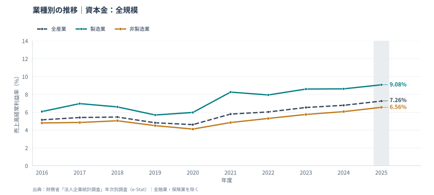
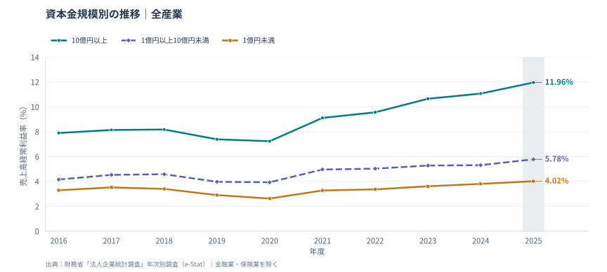

全産業 全規模 / 2025年度
7.26%
+2.11 pt 2016年度比
売上高経常利益率でたどる、業種と企業規模の10年。
全産業 全規模 / 2025年度
7.26%
+2.11 pt 2016年度比
製造業 全規模 / 2025年度
9.08%
非製造業 6.56%
資本金規模間の差 全産業 / 2025年度
7.94pt
10億円以上 − 1億円未満
01 / EXPLORE THE TRENDS
各図は共通の縦軸で表示。色とマーカー・線種で系列を区別しています。
全産業・製造業・非製造業

10億円以上・1億円以上10億円未満・1億円未満

時系列の注意 グレーの帯は2025年度。資本金5億円以上の未回答法人について、この年度から欠測値の補完方法が変更されています。 変更の詳細 ↗
02 / READING THE DATA
全産業の利益率は2016年度の5.15%から2025年度の7.26%へ、2.11ポイント変化。売上高に対する経常利益の厚みを比較できる。
2025年度は製造業9.08%、非製造業6.56%。営業利益率はそれぞれ5.49%・5.41%で、経常利益率との差（営業外収支／売上高）は3.59・1.15ポイント。経常利益率だけで本業の稼ぐ力を判断しない。
2025年度は10億円以上が11.96%、1億円未満が4.02%。両者の差は2016年度の4.61ポイントから7.94ポイントへ。業種構成や営業外収支の違いも含むため、規模そのものの因果効果とはいえない。
対象期間で全産業が最も低いのは2020年度の4.61%。2025年度はそこから2.64ポイント高い。ただし、各年度の集計は同じ企業を追跡した結果ではなく、母集団や業種構成の変化も反映する。
これらは集計値の比較から得られる記述的な特徴です。為替・価格転嫁・生産性など、差を生む個別要因の寄与はこのグラフだけでは特定できません。
03 / SOURCES & METHOD
経常利益÷売上高× 100
法人企業統計の母集団推計値を使用。企業ごとの利益率の単純平均ではなく、集計金額の比率です。OPEN DATA / REPRODUCIBLE
計算に使った原データと、図を生成するコードを公開しています。
uv run build.pyコードはPEP 723形式。リポジトリ一式を取得し、uv run build.py で保存済みデータから再生成できます。--refresh を加えるとe-Statの公開CSVを再取得します（APIキー不要）。
{kind=link}
{kind=link}
{kind=link}